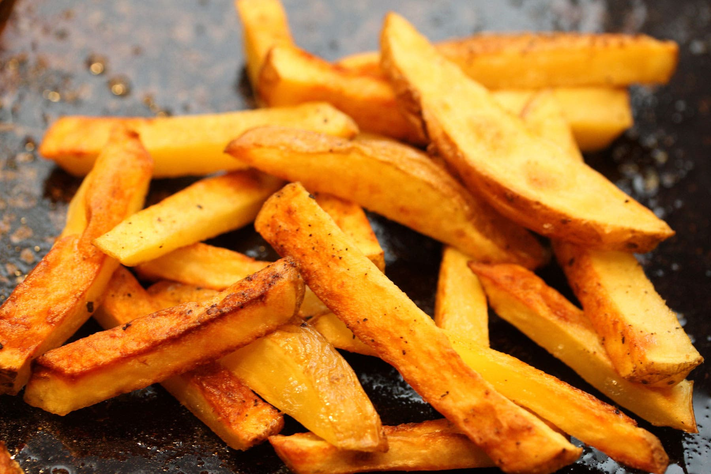

Patatas Fritas
Receta de patatas fritas caseras

Ingredientes
2 Patatas
Aceite
Sal
Pimenton dulce
Pimienta molida
Elaboracion
Pelar las patatas y cortarlas
Calentar el aceite
Freirlas hasta que esten bien doradas
Sazonar con sal, pimienta, y pimenton
Disfrutar!
Volver a inicio